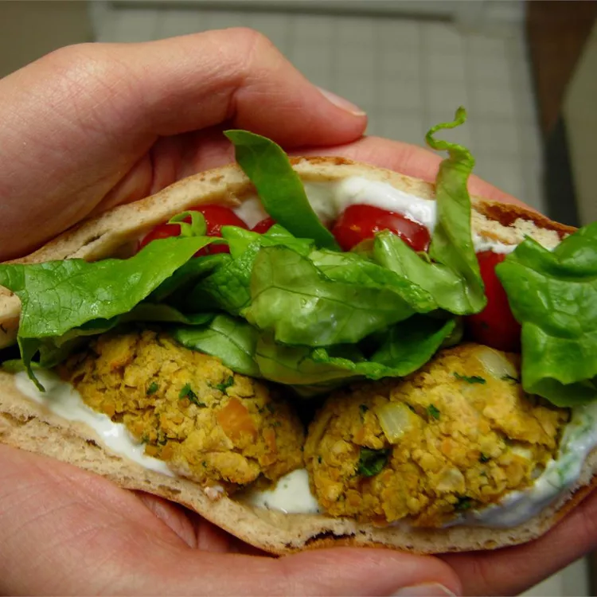

falafel

Description
This is a tasty dense falafel that contains no eggs. Serve on pitas with tzatziki or tahini sauce with lettuce and
tomato.
Ingredients
- 1 (19 ounce) can garbanzo beans, rinsed and drained
- 1 small onion, finely chopped
- 2 cloves garlic, minced
- 1 ½ tablespoons chopped fresh cilantro
- 1 teaspoon dried parsley
- 2 teaspoons ground cumin
- ⅛ teaspoon ground turmeric
- ½ teaspoon baking powder
- 1 cup fine dry bread crumbs
- ¾ teaspoon salt
- ¼ teaspoon cracked black peppercorns
- 1 quart vegetable oil for frying
Steps
-
Mash the garbanzo beans in a large bowl. Stir in the onion, garlic, cilantro, parsley, cumin, turmeric, baking
powder, bread crumbs, salt and pepper. Do not be afraid to use your hands. Shape the mixture into 1 1/2 inch
balls; you should get 18 to 24. If the mixture does not hold together, add a little water.
-
Heat the oil in a deep fryer to 375 degrees F (190 degrees C). Carefully drop the balls into the hot oil, and fry
until brown. If you do not have a deep fryer, heat the oil in a heavy deep skillet over medium-high heat. You may
need to adjust the heat slightly after the first couple of falafels, and be sure to turn frequently so they brown
evenly.